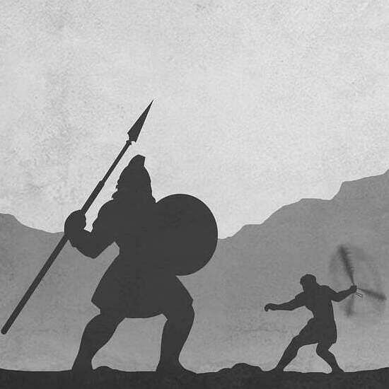

Against
Hardships
Against
Evil
Against
Worry
Against
Death
Who was Marcus Aurelius?
Marcus Aurelius was the last of the Good Emperors.
Meditations: The Wisest Man's Diary
Journaling: Becoming Marcus Aurelius